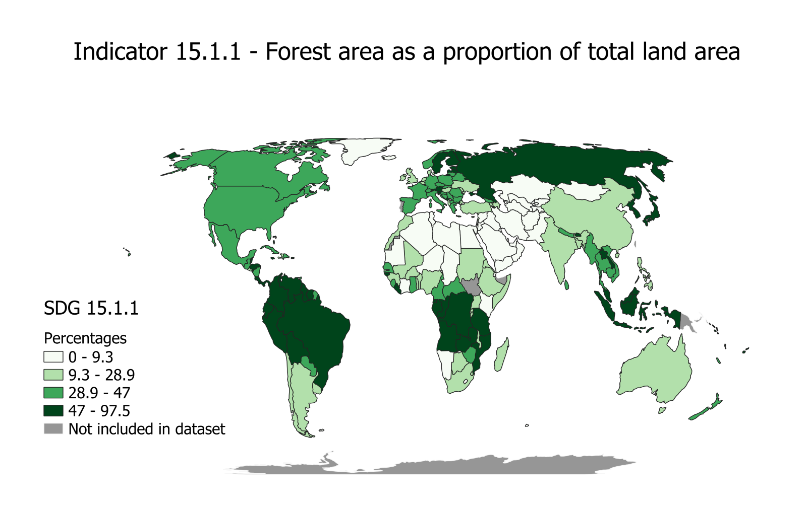
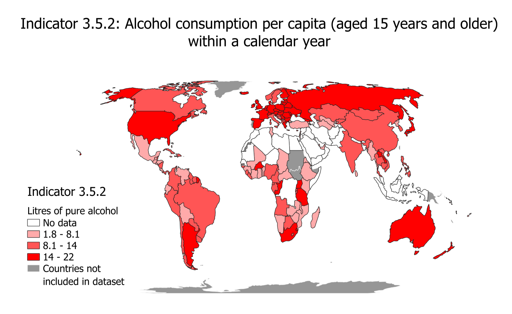

Choropleth Map
SGD indicators 15.1.1 (Forest area as a proportion of total land area for the latest year 2020) and 3.5.2 (Alcohol consumption per capita (≥15 years age) within a calendar year for the latest year 2019)
A choropleth map represents proportional data and uses color to give visual order. Its strength is that it is easy to create, read, and understand by a general audience.
Steps taken in map-making. First, I used the ‘global boundaries’ dataset from Natural Earth (the filtered version from the assignment instructions). The other 2 indicator datasets used came from The SDG API: the 15.1.1 dataset already provided to us and having chosen 3.5.2 dataset from their website directly. Second, with the aim of creating an informative choropleth map for each of the 2 indicators, that shows their respective values/data points on the global map for each country, we joined the global boundaries dataset with both indicators individually to produce two distinct choropleth maps using QGIS. In the process, we learnt to observe and filter the attributes table. For instance, it was noted that the –99 values in the global database reflected no data and that the columns of ISO3 and SU_A3 in the global and indicator datasets, respectively, matched. Further, we attempted to make the resulting joined choropleth maps more readable by adjusting its class breaks, color schemes, legends and projections. Lastly, the web map was stylized (color schemes, class breaks, pop-ups) on Esri online for the individual indicator maps, that were finally compared using a template.
For each indicator, the map communicates the value range for that indicator for different countries in their latest years. For instance, for SDG indicator 15.1.1, the choropleth map in Figure 2 shows that Russia, Sweden, Finland, Brazil, Venezuela, Columbia, Ecuador, Peru, Suriname, Guyana and the Democratic Republic of Congo, all shaded in the darkest shade of green, having the highest-class division, informs that forest area makes up over 47% (but less than 97.5%) of the total land area for all these countries. Comparably, for SDG indicator 3.5.2, Russia is shaded in the highest-class value, having between 14 and 22 liters of alcohol consumption per capita per year, shown in Figure 3.
 